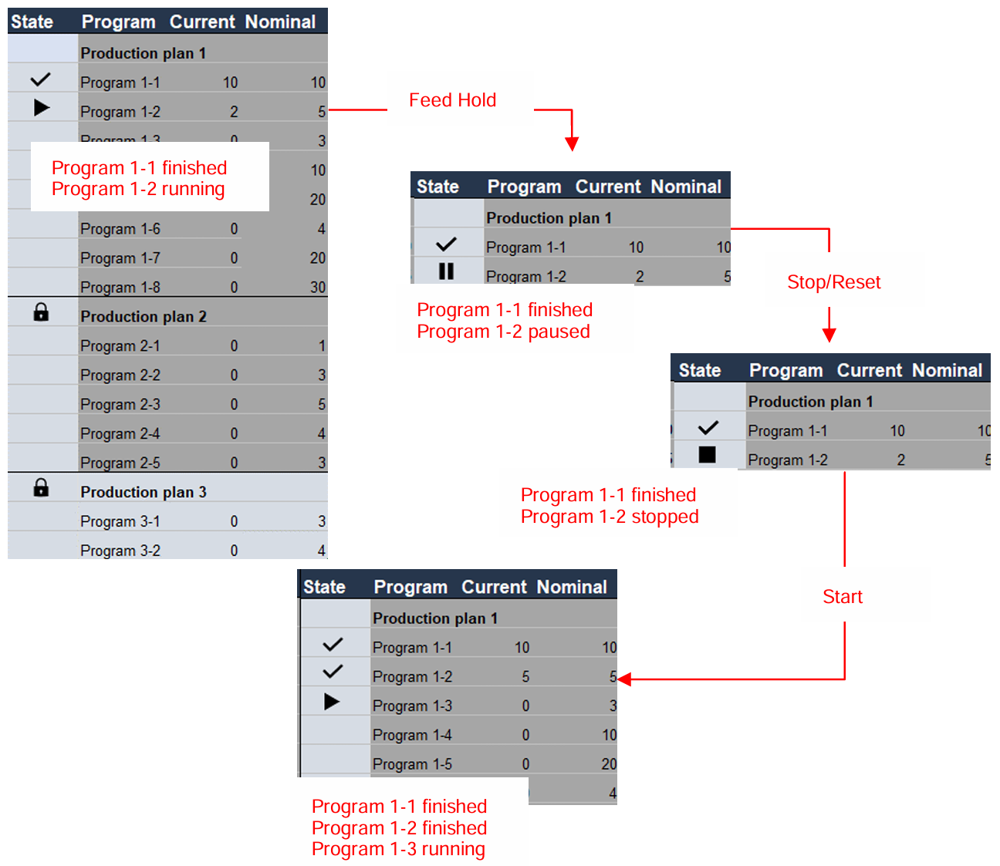
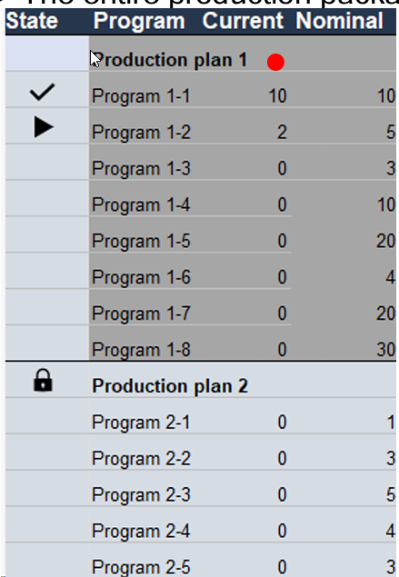
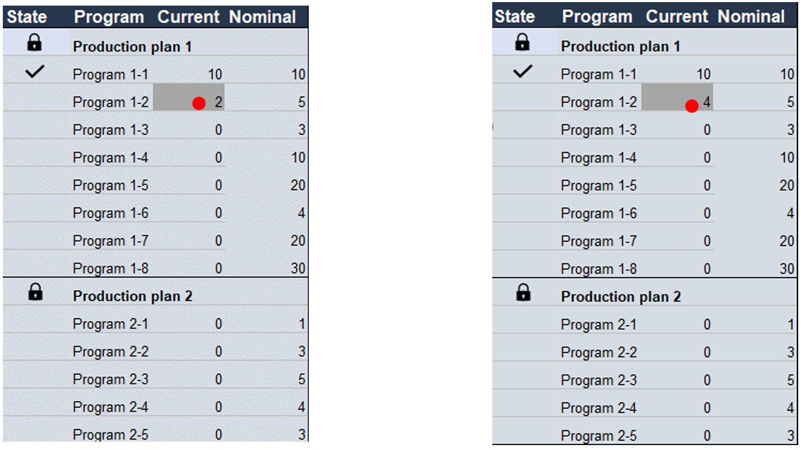
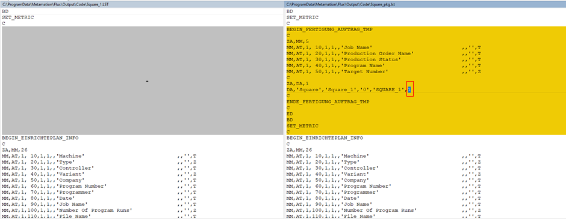
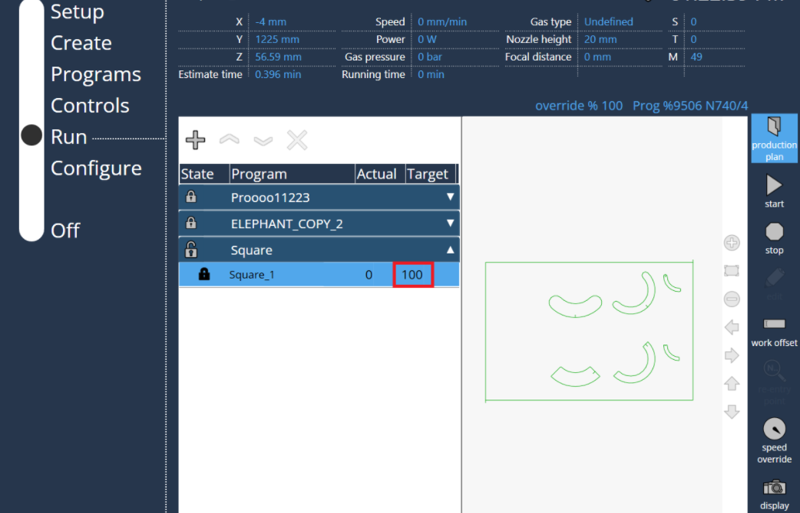
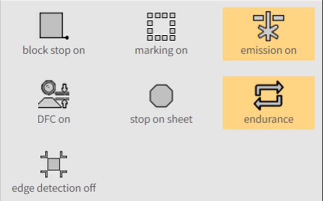
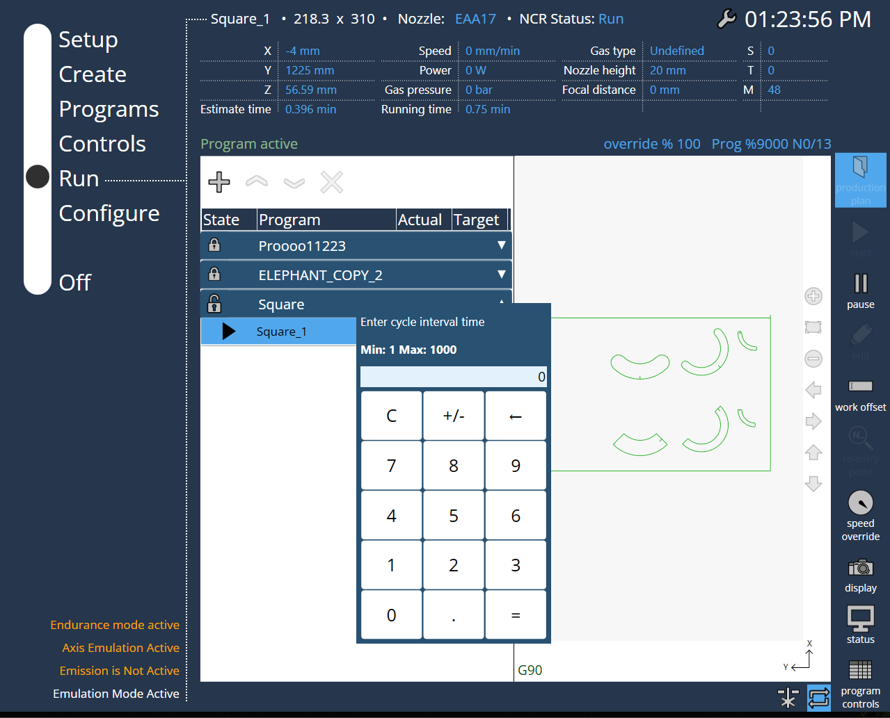

运行生产计划
在生产计划列表中，可能显示大量程序。为了 清晰查看当前程序运行状态，添加了指示相应状态的符号。


程序选择和数量更改
要选择生产计划，请点击生产计划名称。 整个生产包将以深色突出显示。

更改数量：只有在生产计划处于锁定状态时才能调整数量。 这是为了避免机床出现意外的装载/卸载反应。
调整当前数量时，最大值为"目标数量 - 1"， 以确保预装载的板材能够正常完成加工。

每个生产计划的数量都会被保存：可能会出现这样的情况， 即生产计划正在运行，但有一个更高优先级的新生产计划 需要处理。在这种情况下，操作员将中止当前生产计划 并处理新的生产计划，最后恢复原始生产计划继续执行。 因此，需要为每个生产计划保存所有最新的数量状态。 数据存储在IPC中，即使机床重新启动也不会被清除。
当前板材完成后停止
"板材停止"按钮：此功能用于在当前板材加工完成后停止生产计划。 在某些情况下，操作员希望停止生产计划，不需要继续处理下一块板材， 可以使用此功能作为预设。
在加工过程中激活此按钮，当前板材完成后， 生产计划将停止，不会继续处理下一块板材。

在生产计划中，每次启动单个程序时 都会进行材料确认。

耐久模式
-
耐久模式的目的是检查以下项目：
-
机床机械安装的可靠性。
-
气体压力调节器。
-
高度控制功能。
-
如果发射开启，则激活打标选项。
-
焦点控制运动。
-
焦点直径变化等。
-
-
耐久模式只能在生产计划中使用，并在同一托盘上运行。（托盘交换器将被停用。）
-
因此，仅支持pkg.lst文件程序。如果需要在耐久模式下测试特定的LST程序，请按以下方式将其转换为.pkg.lst：
-
以下是将普通LST（左侧）转换为在生产计划（右侧）中运行的对比， 将目标数量最小定义为1。

高亮显示的值'1’是目标数量。 -
同时，按以下方式更新作业名称、生产订单名称和程序名称：

其中，
'Square' 是作业名称
'Square_1' 是生产订单名称
'SQUARE_1' 是程序名称 -
以下是转换为PP模式所需的附加代码：
-
-
在生产计划中选择所需的作业程序，并输入程序要运行的循环次数。

-
激活耐久模式按钮，提示将出现在左侧。在活动状态下，切换到正常模式时将被停用，返回PP模式时将自动重新激活，直到通过PP模式中的按钮将其停用。 +

-
首次捕获工作偏移。如果选择了边缘检测，则每次程序启动时也会执行边缘检测。

-
在程序启动时，会出现一个弹出窗口，在此输入循环间隔时间。

-
程序将持续运行，直到达到给定的目标数量。